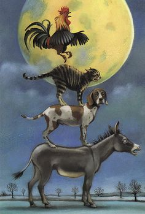
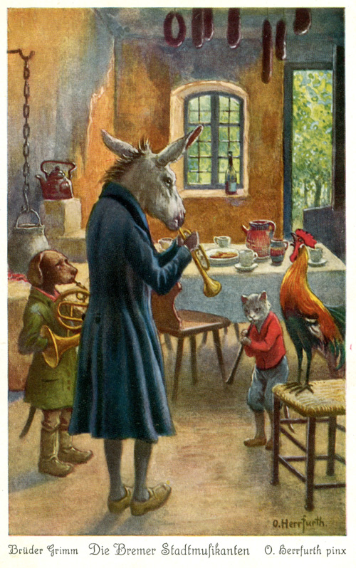

Merseră ei ce merseră, dar cum nu reuşiră să ajungă la Bremen într-o singură zi, înnoptară într-o pădure.
Măgarul şi câinele îşi făcură culcuş sub un copac mare, iar cocoşul şi pisica se căţărară în el. Înainte de a apuca să adoarmă, măgarul îşi mai roti încă o dată privirea şi deodată i se păru că zăreşte în depărtare o luminiţă. Atunci le spuse tovarăşilor lui că nu foarte departe de acolo trebuie să fie o casă, căci se zăreşte o luminiţă.
– Hai s-o întindem chiar acum într-acolo, fu de părere măgarul, că adăpostul ăsta nu prea e de soi!
Câinele era la fel de zorit, gândind că dacă ar fi găsit pe acolo oscioare ori o bucăţică de carne i-ar fi prins tare bine.
Porniră deci spre locul în care se vedea luminiţa şi în curând o văzură scânteind şi mai puternică. Când ajunseră în dreptul căsuţei, măgarul, fiind cel mai înalt dintre ei, se apropie de fereastră şi privi înăuntru.
– Ce vezi acolo? îl întrebă cocoşul.
– O masă încărcată cu mâncăruri şi nişte tâlhari care stau în jurul ei şi se înfruptă de zor.
– Hm, aşa ceva ne-ar prinde tare bine şi nouă! răspunse cocoşul.
Apoi începură să se gândească cu toţii în ce chip ar putea să îi pună pe tâlhari pe fugă. Măgarul îşi ridică picioarele dinainte şi le propti de marginea ferestrei, câinele sări în spinarea măgarului, pisica se căţără pe spatele dulăului, iar cocoşul zbură şi se aşeză pe capul pisicii(și reprezentarea schematică).
Şi aşa cum erau orânduiţi, ca la un semn, porniră cu toţii să cânte. Măgarul răgea, câinele lătra, pisica mieuna, iar cocoşul cucuriga. După ce îşi încheiară cântarea, se năpustiră prin fereastră-n odaie, de făcură ţăndări toate gemurile.

De spaimă, tâlharii săriră în sus ca nişte apucaţi şi, crezând că dădură stafiile peste dânşii, fugiră cu toţii în pădure.
Cei patru prieteni se aşezară la masă, în locul tâlharilor, şi se ghiftuiră straşnic. După ce se ospătară, cei patru muzicanţi, stinseră luminile şi-şi aleseră culcuşul, fiecare după pofta inimii şi după cum îi era firea.

Măgarul se culcă într-un maldăr de gunoi, câinele se făcu covrig în dreptul uşii, pisica se tolăni pe cuptor, iar cocoşul se cocoţă sub o grindă.
După ce trecu de miezul nopţi, tâlharii văzură de departe că în casă nu mai ardea nicio lumină. Atunci căpetenia le zise:
– Mi se pare că ne-am cam speriat de pomană!… S-ar cuveni să ne ruşinăm că am fost atât de slabi de înger!
Muzicanţii din Bremen - cei patru prieteni, unul peste altul, în faţa ferestreiŞi trimise pe unul de-al lor să vadă ce se mai petrece pe lângă casă. Iscoada nu desluşi nimic care să-l pună pe gânduri, aşa că intră în bucătărie şi vru să aprindă o lumânare. Dând de ochii scânteietori ai pisicii, îi luă drept cărbuni încinşi şi apropie de ei un băţ de chibrit, ca să ia un foc. Dar mâţa nu pricepu de glumă! Îi sări la obraji şi începu să îl zgârie şi să îl scuipe. Tâlharul trase o sperietură zdravănă şi vru să iasă afară pe uşa din dos. Dar nu scăpă cu una, cu două. Câinele, care sta culcat în dreptul ei, se repezi şi îl muşcă zdravăn de picior. Tâlharul o luă atunci la goană prin curte, dar când trecu de maldărul de gunoi, măgarul îi arse o copită, de văzu stele verzi. Iar cocoşul, trezit de toată hărmălaia de afară, începu să strige de pe grindă: „Cu-curigu, cu-curigu!”…
Atunci tâlharul nu se opri decât înaintea căpeteniei sale şi îi povesti toate cele prin câte trecuse:
– Vai de noi!… În casă s-a cuibărit o cotoroanţă afurisită care mi-a zgâriat obrazul cu nişte gheare lungi şi ascuţite. Iar la uşă, cine crezi că stătea?… Unul cu un cuţit, pe care mi l-a înfipt în picior!… Socoteam că am scăpat! Da’ vezi să nu scap eu aşa de uşor! În ogradă, o namilă neagră m-a pocnit cu o măciucă, iar sus, cocoţat pe acoperiş, sta însuşi judecătorul, care tot striga: „Aduceţi-mi-l de îndată pe tâlhar!”…
Din seara aceea, tâlharii nu au mai cutezat să se apropie de casă, iar cei patru muzicanţi din Bremen s-au simţit atât de bine acolo, încât nu s-au mai îndurat să plece…
<<<<<<< Updated upstream
<- Înapoi
=======
<- Înapoi
Despre autori
Acasă
>>>>>>> Stashed changes